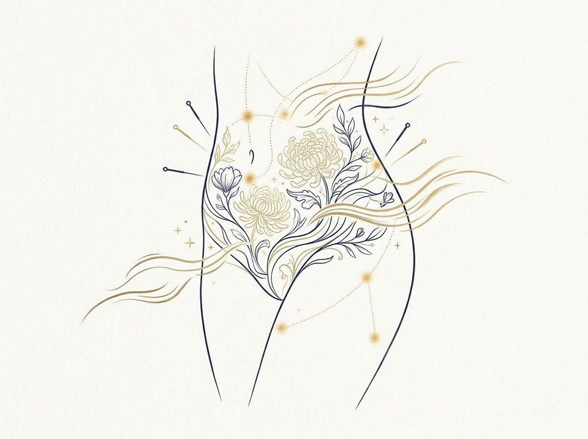

産後の体調不良の鍼灸
出産後のホルモン急落と育児疲労による不調に対し、三陰交・百会・気海と骨盤・自律神経ケアで産後の回復を支える施術です。

このようなお悩みはありませんか？
- ✓産後からめまい・立ちくらみや極度の疲労感が続いている
- ✓夜間授乳で眠れず、気分の浮き沈みやイライラがつらい
- ✓腰痛・恥骨や尾骨の痛み・肩こり・手首痛、尿漏れがある
- ✓抜け毛や肌荒れ、便秘、乳房の張り・母乳の悩みが気になる
原因・メカニズム
産後の体調不良は、産後6〜8週間の「産後の肥立ち」期間における回復不足に加え、出産後の女性ホルモン急落や授乳ホルモン（オキシトシン・プロラクチン）分泌、悪露・出血による貧血、夜間授乳による慢性睡眠不足、育児ストレス、骨盤の不安定・骨盤底筋損傷、母乳によるエネルギー・栄養消耗が重なって起こります。強い抑うつや発熱・乳腺炎症状がある場合は早期受診が大切です。
当院の施術アプローチ
1. 産後健診で貧血・乳腺炎・産後うつ等の異常がないか産婦人科で確認したうえで、お体の回復段階に合わせ安全に施術します
2. ホルモンと自律神経を整える三陰交、精神安定・頭痛に百会、体力回復と下半身冷えに気海を用い、母乳分泌には肩甲骨中央へのお灸も活用します
3. 葉酸・鉄分（ビタミンCと併用）・カルシウム・タンパク質等の栄養補給と休息を指導し、授乳中のサプリ利用は医師相談を案内します
よくある質問（FAQ）
Q. 産後いつ頃から鍼灸を受けられますか？
産後1ヶ月健診で産婦人科医から経過良好の確認が出た後からをおすすめしています。帝王切開後や悪露が続く場合は主治医の許可を優先してください。
Q. 乳腺炎の痛みや発熱がある場合も施術できますか？
強い腫れや発熱がある急性期の乳腺炎はまず産婦人科や母乳外来での処置が最優先です。症状が落ち着いた後の体調・巡りケアとしてご相談ください。
#産後の体調不良#産後の肥立ち#骨盤ケア#産後疲労#鍼灸#銀座